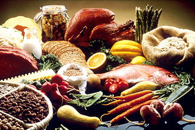
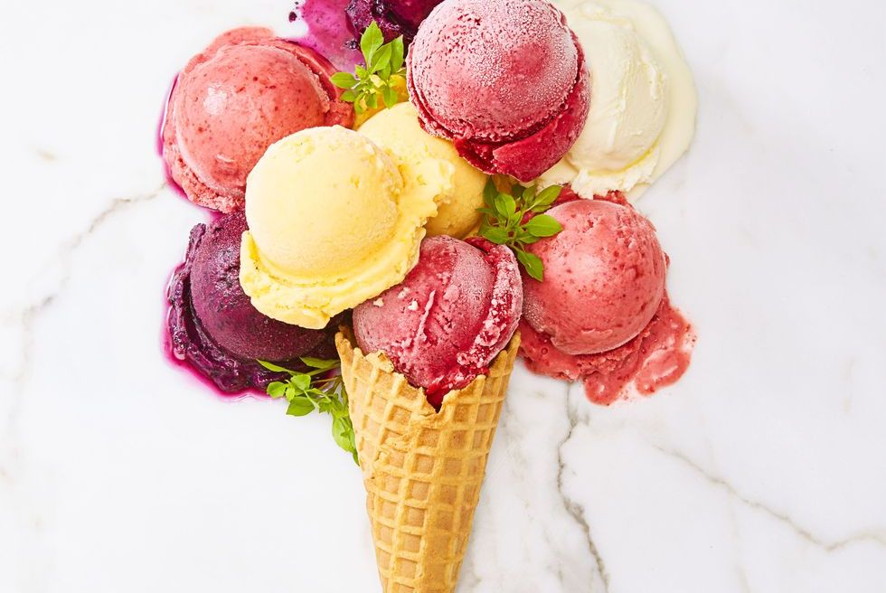

image credit: THE GOOD HOUSEKEEPING TEST KITCHEN, from https://www.goodhousekeeping.com/food-recipes/dessert/a22577539/easiest-ever-fruit-and-coconut-ice-cream-recipe/
About Us
A site for recipes & food images sharing
A social platform
Our Goals

image credit: Wikipedia, https://en.wikipedia.org/wiki/Food
Helping people who don't know how to cook
Encourage more people to cook at home
Enhancing connections among people by our interation functions
Ready 4 Food is a food sharing website that targets those who are new to cooking or looking for inspiration to try out new recipes. Our idea came up in the middle of the COVID-19 pandemic where people were quarnited in their homes. A consequence of this pandemic was that people were reliant on their ability to make food at home. For those who are experienced in home cooking, there was no problem; But for those who are not experienced, making food is a daunting challenge. This challenge is what we, Ready 4 Food, want to help with and we hope to achieve this by having a platform that is easy to use and accessable.
Outside of being a place to find recipes, Ready 4 Food is also intended to be a social platform where people can comment and react to recipes they like or dislike. Our goal for incorporating a social platform on our webpage is to cultivate a community that can relate to experimenting with new food. We hope to achieve this by implementing a page where members of our community are able to post recipes as well as comment and react to posts made by their peers. We also want to include a page solely dedicated to sharing pictures of people trying new recipes to incentivize new users to come and try out new recipes as well being another way to interact with the community. This photo sharing webpage would be a mix of Instagram and Tumblr.